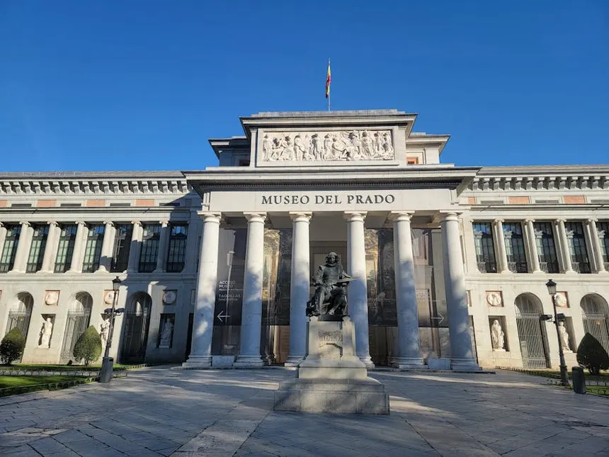
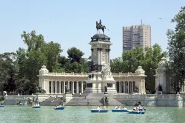
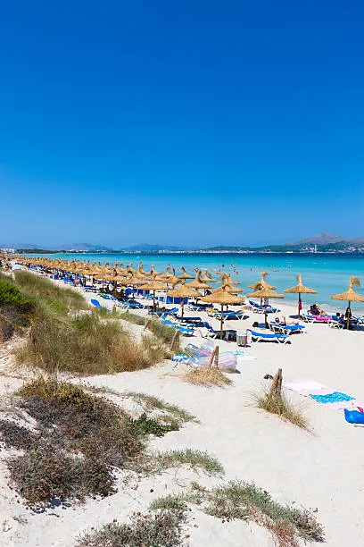

Royal Palace Of Madrid (Palacio Real de Madrid) — ესპანეთის სამეფო ოჯახის ოფიციალური (მაგრამ არა ფაქტიური) საცხოვრებელი.
მდებარეობს მადრიდის ცენტრში, მდინარე მანსანარესის ხეობაზე.
ეს ერთ-ერთი უდიდესი სასახლეა ევროპაში — 3 418 ოთახი, ფართობი ~135 000 მ². ძველი სასახლე (ალკაზარი), რომელიც IX საუკუნეში მოროების მიერ აშენდა,
1734 წელს გაჩანგლიდა. ახალი სასახლე 1738 წელს ააშენა მეფე ფილიპე V-ის ბრძანებით; მშენებლობას ხელმძღვანელობდა იტალიელი არქიტექტორი ჯუან ბავტისტა
საკეტი. სასახლე 1764 წელს დასრულდა; მისი პირველი მცხოვრები იყო კარლოს III.
2. Padro Museum
Padro Museum (Museo Nacional del Prado) — ესპანეთის ეროვნული ხელოვნების მუზეუმი, მადრიდში.
მსოფლიოს ერთ-ერთი უმნიშვნელოვანესი ხელოვნების კოლექცია.

მუზეუმი 1819 წელს გაიხსნა მეფე ფერდინანდ VII-ის დროს. შენობა 1785 წელს ააშენა არქიტექტორმა ხუან დე ვილიანუევამ მეფე კარლოს III-ის ბრძანებით —
თავდაპირველად ბუნებრივი ისტორიის კაბინეტისთვის. 1868 წელს მუზეუმი ნაციონალიზაცია გაიცა და მიიღო სახელი Museo Nacional del Prado (სიტყვა prado
ქართულად „მდელო" ნიშნავს — მუზეუმის ადგილზე მდელო იყო).
3. Retiro Park
Retiro Park (Parque del Buen Retiro, „კარგი დასასვენებელი პარკი") — მადრიდის უდიდესი და ყველაზე ცნობილი პარკი, ფართობი
~125 ჰექტარი, 15 000-ზე მეტი ხე. 2021 წლიდან შედის UNESCO-ს მსოფლიო მემკვიდრეობის სიაში („პრადოს პრომენადა და ბუენ რეთიროს ლანდშაფტი").

პარკი XVII საუკუნეში შეიქმნა როგორც სამეფო ბაღი მეფე ფილიპე IV-ისთვის; მისი დამსახვერი ოლივარესის გრაფ-ჰერცოგი ააშენა სასახლე
Buen Retiro და იტალიური სტილის ბაღები. 1868 წელს, რევოლუციის შემდეგ, პარკი საჯარო გახდა
4. Playa Mayor
Playa de Cala Mayor (იგივე Cala Major) — ქალაქური ქვიშის პლაჟი პალმა-დე-მალორკის დასავლეთით, დაახლოებით
4 კმ-ში ქალაქის ცენტრიდან. ფართობი ~250 მ × 50 მ, თეთრი, მსუბუქი ქვიშა, სუფთა მარცალფერი წყალი.

პლაჟს აქვს Blue Flag-ის სტატუსი (ევროპის ხარისხის სტანდარტი). წყალი ნელა ღრმავდება, ტალღები იშვიათია — იდეალურია
ბავშვებისთვის. გარშემო ჰოტელები, რესტორნები და ბარებია; შეუძლია დაიქირავოს მზის კარავები და პანკები.